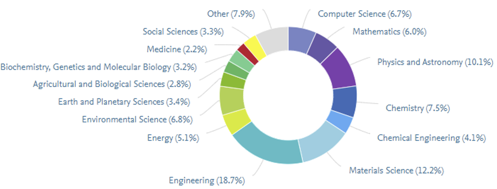
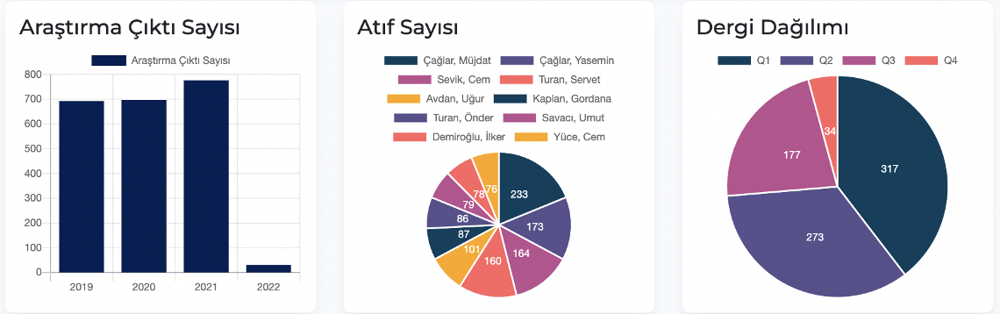
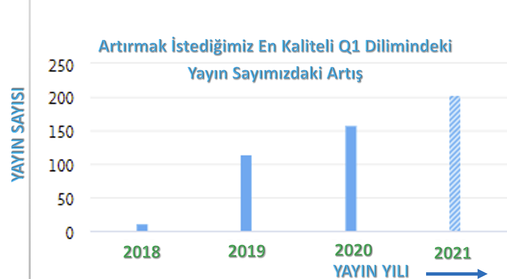

Research and Graduate Processes Directorate (ALSD), in line with the mission, vision, core values and policies of Eskişehir Technical University, ensures the development of talents and skills in the field of research in harmony, in terms of quantity and quality, which will enable the University to rank at the top in national and international environments. was established in order to support students in obtaining research and technology outputs and raising qualified researchers, and is responsible for the management of the research ecosystem at our university.
ESKISEHIR TECHNICAL UNIVERSITY
Research Areas
Distribution percentages of publications by fields:
Number of research output, number of citations and journal distribution, respectively:
The increase in the number of publications in the highest quality Q1 slice that we want to increase:
Our publication numbers that have increased over the years:

The Research and Graduate Processes Directorate
The Research and Graduate Processes Directorate is responsible for the coordination of the entire research ecosystem of our University and the monitoring of its outputs, and tries to carry out educational and research activities interactively with all its stakeholders, from undergraduate students to graduates, from academicians to industry employees, in order to activate research elements and produce value-creating research outputs. The objectives of the Research and Graduate Processes Directorate determined in the strategic plan:
(i) Increasing the efficiency and technological adequacy of the existing research infrastructure,
(ii) To increase the quality of research outputs,
(iii) Developing output and impact-oriented collaboration networks, and
(iv) To increase the number and budget of external projects.